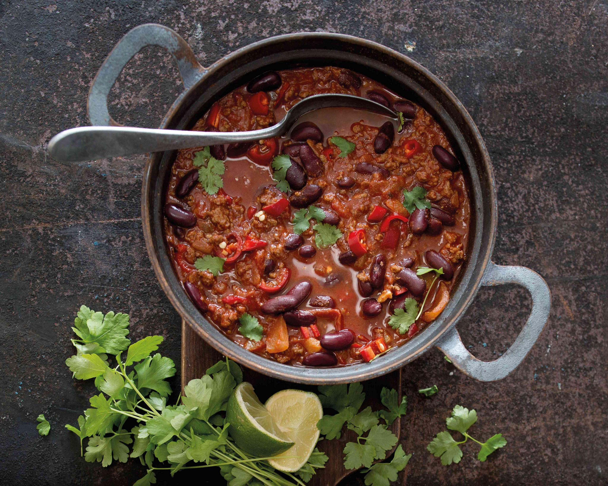

Chilli

Chilli con carne is a spicy stew containing chilli peppers, meat, tomatoes and often kidney beans.
Ingredients
- 1 tablespoon olive oil
- 1 medium yellow onion
- 1 pound 90% lean ground beef
- 2 1/2 tablespoons chilli powder
- 2 tablespoons ground cumin
- 2 tablespoons granulated sugar
- 2 tablespoon tomato paste
- 1 tablespoon garlic powder
- 1 1/2 teaspoons salt
- 1/2 teaspoons ground black pepper
- 1/4 teaspoons ground cayenne pepper
- 1 1/2 cups beef broth
- 1 can of diced tomatoes
- 1 can of red kidney beans, drained and rinsed
- 1 can tomato sauce
Instructions
- Add the olive oil to a large soup pot and place it over medium-high heat for two minutes. Add the onion. Cook for 5 minutes, stirring occasionally.
- Add the ground beef to the pot. Break it apart with a wooden spoon. Cook for 6-7 minutes, until the beef is browned, stirring occasionally.
- Add the chilli powder, cumin, sugar, tomato paste, garlic powder, salt, pepper, and optional cayenne. Stir untill well combined.
- Add the broth, diced tomatoes (with their juice), drained beans, and tomato sauce. Stir well.
- Birng the liquid to a low boil. Then, reduce the heat (low to medium-low) to gently simmer the chili, uncovered, for 20-25 minutes, stirring occasionally.
- Remove the pot from the heat. Let the chili rest for 5-10 minutes before serving.